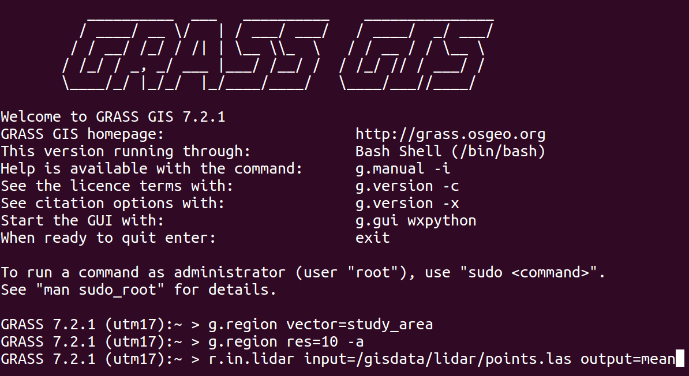
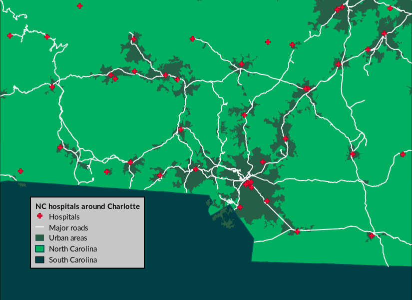

GRASS GIS
Advanced geospatial technologies:
The new powerful GRASS GIS 7.2 release
North Carolina State University
NCSU
GeoForAll Lab
at
Center for Geospatial Analytics
Markus Neteler - Mundialis GmbH &, Co. KG;
Anna Petrasova - NCSU, Helena Mitasova - NCSU

FOSS4G 2017 Boston
Runs everywhere
- from Raspberry Pi to HPC cluster
- Linux, Mac, Windows, ...
- GCC, clang, C, C++98, C++11, C++14
Interface: CLI
Interface: GUI

Tangible Landscape

APIs
- C, Python, command line
- 3rd party: R, Ruby, through QGIS Processing (Python or R)
Functionality
- Hydrology
- Remote sensing/imagery/image processing
- 3D rasters, space-time cubes
- Spatio-temporal
- Lidar
- Topological vectors, network analysis
- Integrated visualizations, 3D visualizations
- Relational databases (SQLite, PostgreSQL, PostGIS, MySQL)
Return of investment: 2002 code in 2017?
version 5.0 code works as is in 7.2:r.mapcalc depr.bin="if((elev - fill)< 0., 1, 0)"
although there is a better way to write it:
r.mapcalc "depr_bin = if((elev - fill) < 0., 1, 0)"
Command line prevails: 1987

Command line prevails: 2017

Scientific foundation
references to related scientific papers associated with a module
GRASS GIS 7.2
- Recent releases:
- 7.2.0 (December 2016) 1,900 commits since 7.0
- 7.2.1 (May 2017) 150 commits since 7.2.0
- Upcoming releases:
- 7.2.2 (summer/fall 2017)
- 7.4.0 (fall/winter 2017)
- 8.0.0 (panning started)
New features in 7.2
Data catalog

by Tereza Fiedlerova and Anna Petrasova
Simple Python Editor

by Vaclav Petras
Vector legend
d.legend.vect
by Adam Laza and GSoC mentors
Advanced search in command line

by Jachym Cepicky
3D raster flows and gradients

by Anna Petrasova
Temporal Algebra

by Thomas Leppelt and Soeren Gebbert
Other improvements in 7.2
viridis as default color table
by Vaclav Petras
Links to source code

by Luca Delucchi
Graphical index
by Vaclav Petras; designer needed!
New addons

SLIC
i.superpixels.slic - image segmentation using SLIC superpixelsby Rashad Kanavath and Markus Metz
Itzï

by Laurent Courty
FUTURES

research at NC State University, Center for Geospatial Analytics
parallel r.sun

by Jaroslav Hofierka et al.
Resources
- Full list of core modules and official addon modules
- Introduction to GRASS GIS
- Processing lidar and UAV point clouds
- How to write a Python GRASS GIS 7 addon
- Spatio-temporal data handling and visualization
- Urban growth modeling with FUTURES
-
Books (English):
- Open Source GIS: A GRASS GIS Approach
- Tangible Modeling with Open Source GIS
- GIS-based Analysis of Coastal Lidar Time-Series
- Open Source Approaches to Spatial Data Handling
Twitter: vaclavpetras
GitHub: wenzeslaus